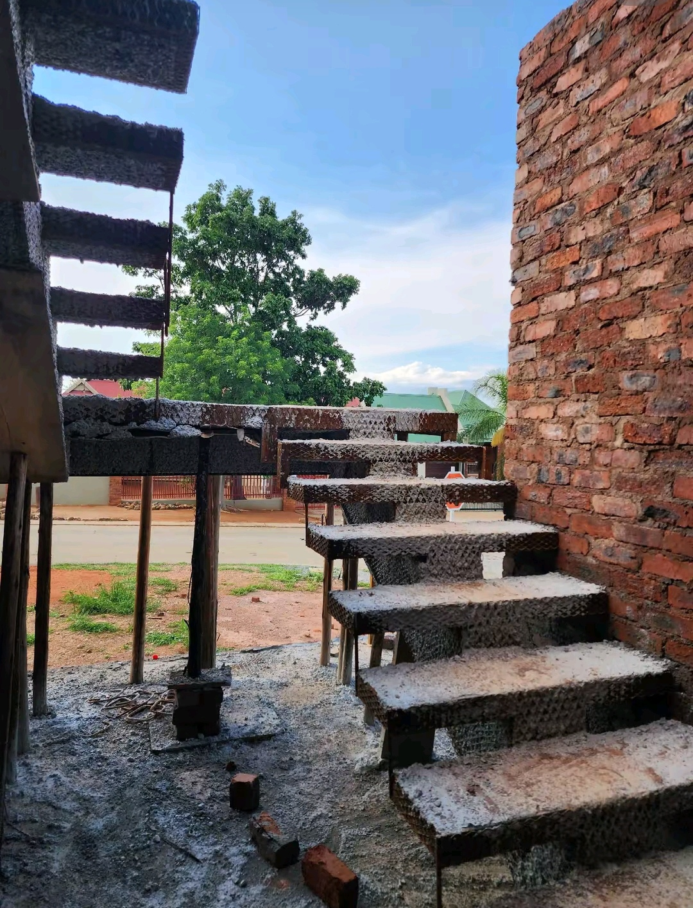
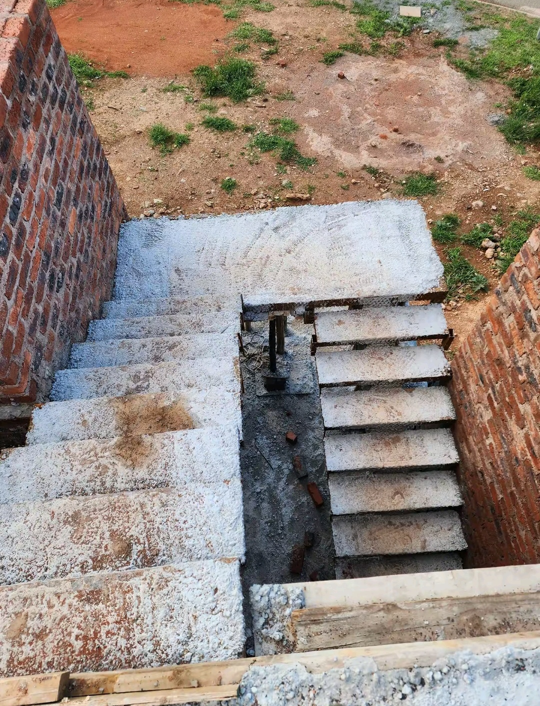

Construction & Working Drawings
Precise CAD drafting, structural steel schedules, foundation plans, and code-compliant municipal drawing packages.
Learn More about Working Drawings

Precise CAD drafting, structural steel schedules, foundation plans, and code-compliant municipal drawing packages.
Learn More about Working DrawingsAdvanced spatial planning, interior walkthroughs, lighting design, and material selection renderings.
Learn More about 3D ModelingStructural alterations, open-plan kitchen removals, structural extensions, and full turnkey builds.
Learn More about Renovations